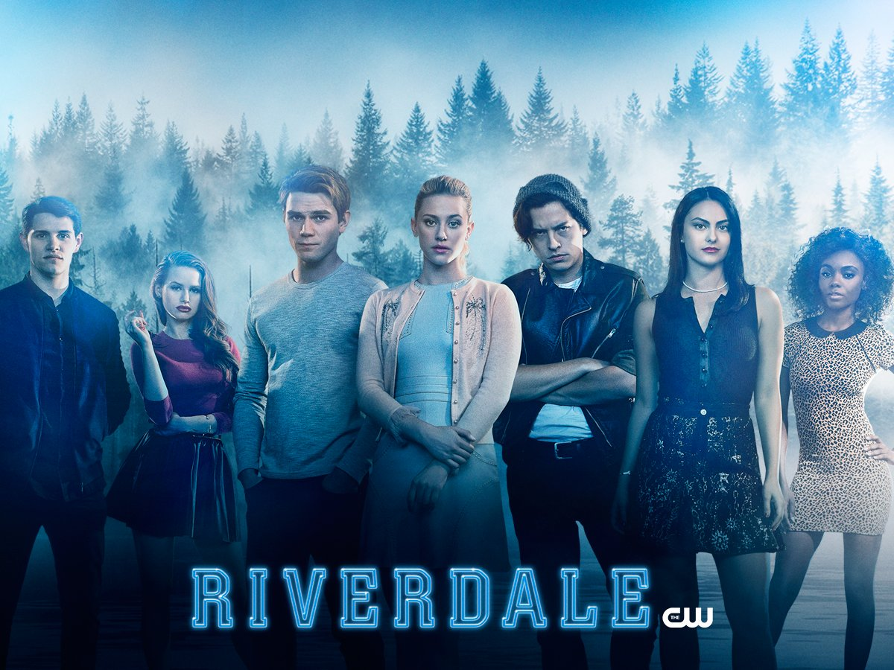
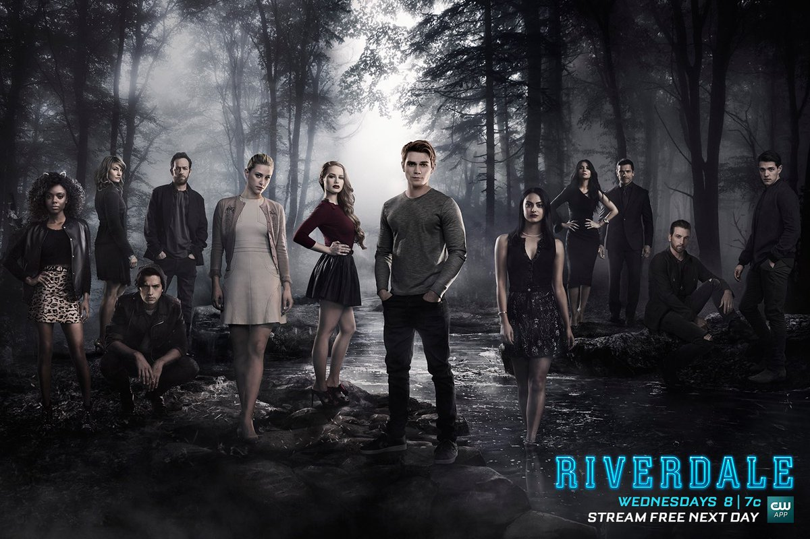

|
 RIVERDALEHISTÓRIA: A história da série é baseada nos quadrinhos de A Turma do Archie mas com um estilo bem mais misterioso e sombrio. Riverdale é o 5º quadrinho adaptado por Greg Berlanti. O mesmo responsável por Arrow, The Flash, Legends of Tomorrow e Supergirl. A série se passa nos dias atuais, explorando a cidade pequena que dá nome à história. SINOPSE: Riverdale traz uma abordagem subversiva de Archie (KJ Apa), Betty (Lili Reinhart), Veronica (Camila Mendes), Jughead Jones (Cole Sprouse), Josie (Ashleigh Murray) e seus amigos, explorando o surrealismo de uma pequena cidade e seus curiosos habitantes.A pequena e tranquila cidade de Riverdale fica de cabeça para baixo quando é atingida pela misteriosa morte de Jason Blossom, um garoto popular do ensino médio e membro da família mais poderosa da cidade. Archie Andrews e seus amigos exploram os problemas da vida cotidiana na pequena cidade, enquanto investigam o caso de Jason Blossom. Mas, para resolver este mistério, o grupo de amigos deve descobrir os segredos que estão enterrados profundamente na superfície da cidade, pois Riverdale pode não ser tão inocente como parece. CURIOSIDADES: Os personagens de Riverdale são inspirados em uma série de quadrinhos da 1939 da Archie Comics. O projeto inicial era adaptar as histórias para um filme, porém os produtores acharam que não teria tanto apelo e a bilheteria seria baixa, por isso optaram em fazer uma série. Cole Sprouse queria representar Archie, porém preferiu fazer o teste para ser Jughead quando descobriu que esse seria o narrador da trama e teria grande importância na série. Camila Mendes nasceu nos Estados Unidos, mas suas raízes são muito brasileiras. Seu pai é de Brasília e sua mãe do Rio Grande do Sul, a atriz já se mudou diversas vezes e chegou a morar no Brasil quando tinha 10 anos. Madeleine Petsch (Cheryl) e Lili Reinhart (Betty) tem uma convivência muito próxima, inclusive por morarem juntas em Vancouver, cidade em que a série é gravada. Alguns episódios receberam o título inspirado em obras clássicas do cinema que envolvem mistérios e mortes inesperadas. Como o episódio 6 da 2ª temporada que se chama “Death Proof”, em homenagem ao filme de Quentin Tarantino.  |